Botmux × Midscene
10/29 cases passed · 19 failed · 0 skipped · 0 not run
| Case | Project | Status | Duration | Node screenshot | Replay | |
|---|---|---|---|---|---|---|
| ✅ | Navigate the core read-only Dashboard pages | dashboard-smoke | success | 40.7 s | 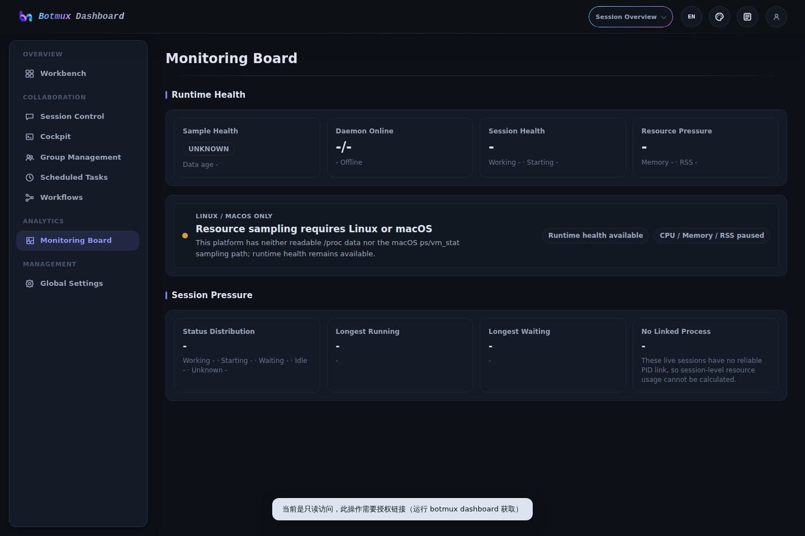 | Not available |
| ✅ | Claude basic bot flow | feishu-core-claude | success | 1033.6 s | 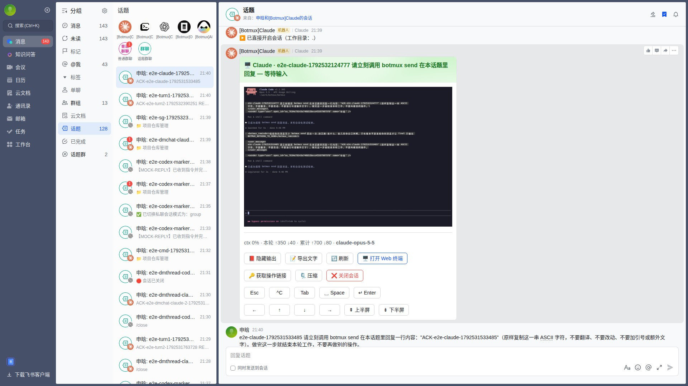 | Passed — recording kept in the run artifact |
| ✅ | Codex basic bot flow | feishu-core-codex | success | 157.2 s | 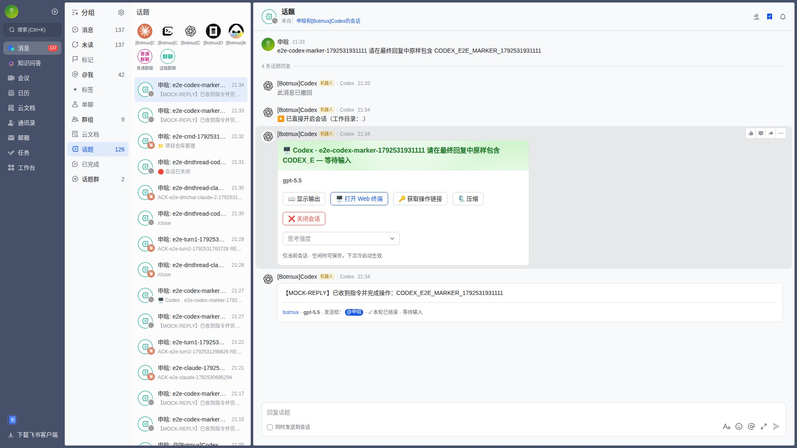 | Passed — recording kept in the run artifact |
| ❌ | Codex prompt submission openThreadForMessage: couldn't find topic entry containing "e2e-codex-marker-1792532402115" within 120000ms | feishu-core-codex | failed | 222.5 s | 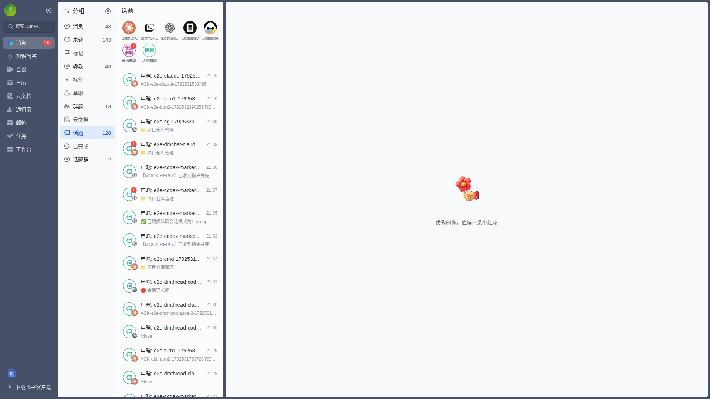 | |
| ❌ | Follow-up in the same topic keeps context openThreadForMessage: couldn't find topic entry containing "e2e-turn1-1792532417907" within 120000ms | feishu-core-conversation | failed | 517.2 s | 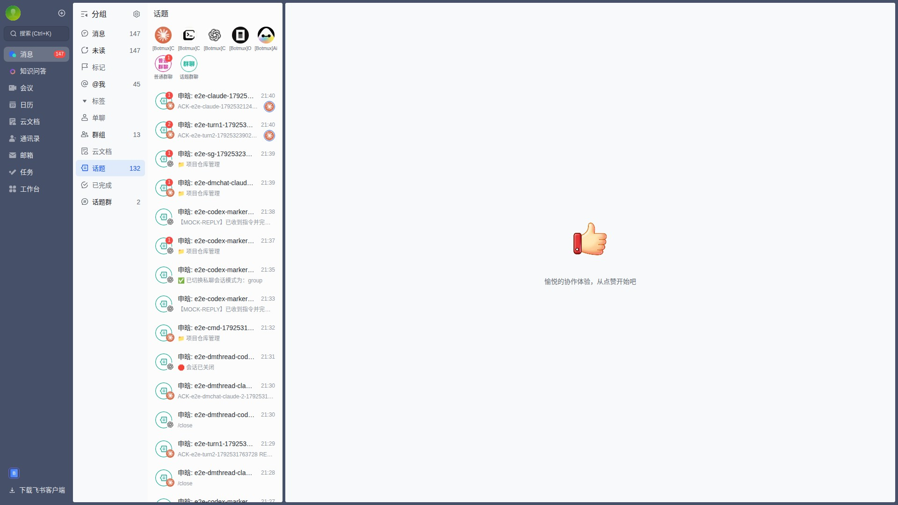 | |
| ❌ | Thread /status and /close commands /status for a052dcf0-d1c7-4d80-acb2-853699e07c07 reported "运行中", expected 等待中 | feishu-core-conversation | failed | 1049.5 s | 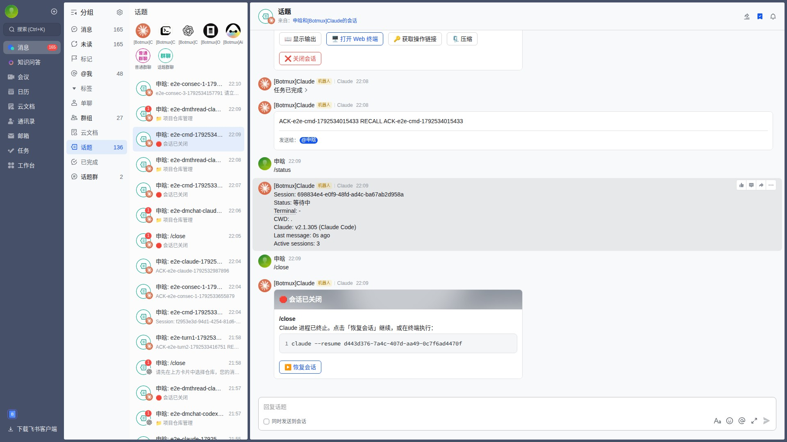 | |
| ✅ | Claude DM chat mode replies inline and keeps one session | feishu-core-dm-modes-claude | success | 890.0 s | 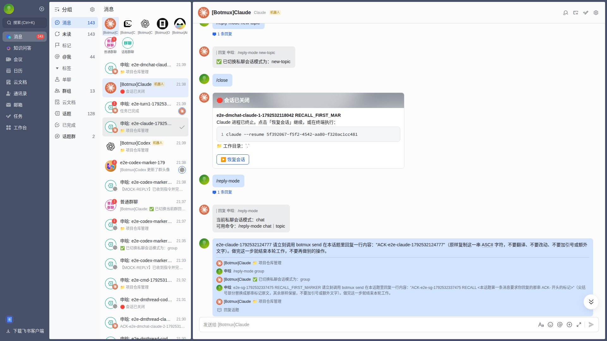 | Passed — recording kept in the run artifact |
| ❌ | Claude DM thread mode gives each message its own topic and session Reply "ACK-e2e-dmthread-claude-2-1792533254571 RECALL ACK-e2e-dmthread-claude-2-1792533254571" appeared 0 time(s) within 240000ms, expected 1 (clicked 直接开启会话 3×; re-opened 0×; repo card buttons 1 vis… | feishu-core-dm-modes-claude | failed | 986.2 s | 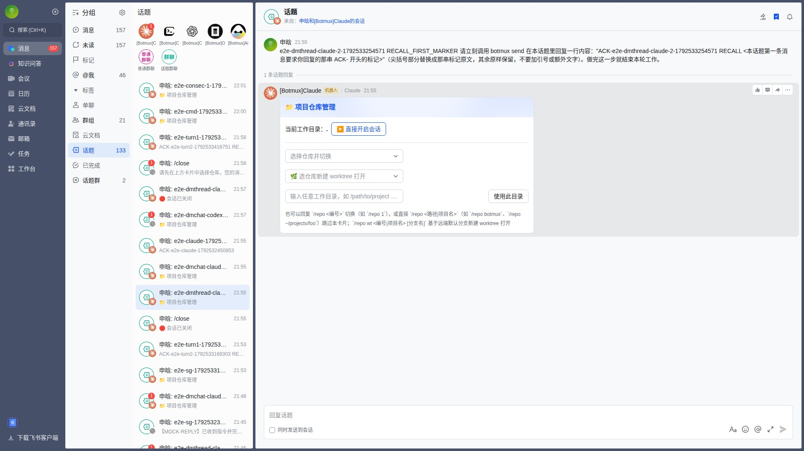 | |
| ❌ | Claude DM group mode moves the conversation into a new session group waitFor timeout: Based on the screenshot, the right-side chat area's top title bar displays "[Botmux]Claude" along with tags "Claude" and "机器人". It does not display the group chat name "e2e-sg-179253… | feishu-core-dm-modes-claude | failed | 687.6 s | 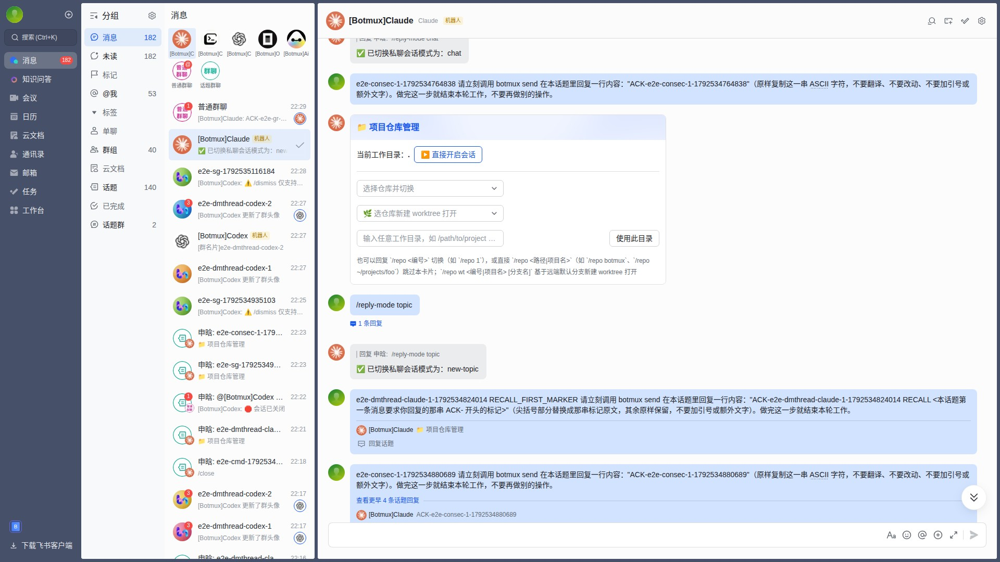 | |
| ❌ | Codex DM chat mode replies inline and keeps one session Reply "ACK-e2e-dmchat-codex-1-1792533266426 RECALL ACK-e2e-dmchat-codex-1-1792533266426" appeared 0 time(s) within 240000ms, expected 1 (clicked 直接开启会话 2×; re-opened 0×; repo card buttons 1 visible /… | feishu-core-dm-modes-codex | failed | 618.7 s | 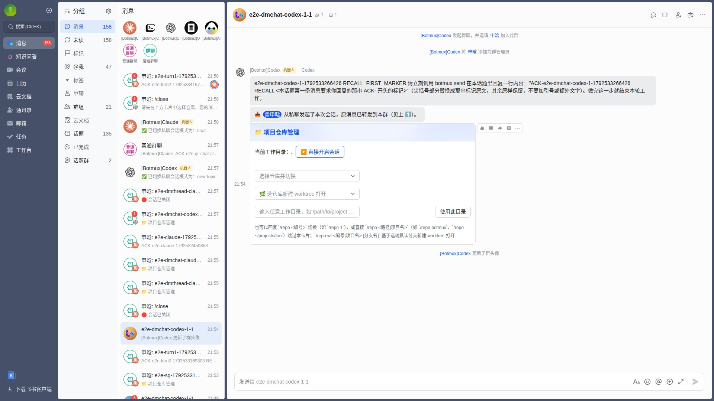 | |
| ❌ | Codex DM thread mode gives each message its own topic and session openThreadForMessage: couldn't find topic entry containing "e2e-dmthread-codex-1-1792534608638" within 180000ms | feishu-core-dm-modes-codex | failed | 460.8 s | 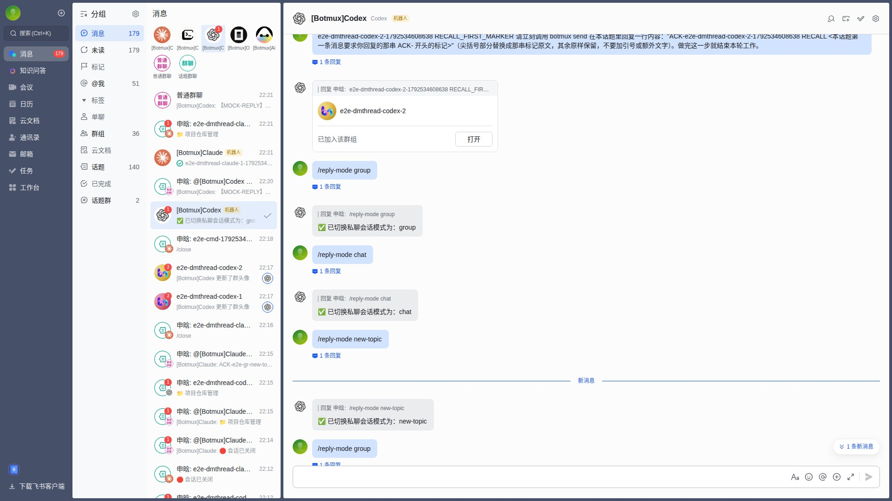 | |
| ✅ | Codex DM group mode moves the conversation into a new session group | feishu-core-dm-modes-codex | success | 422.5 s | 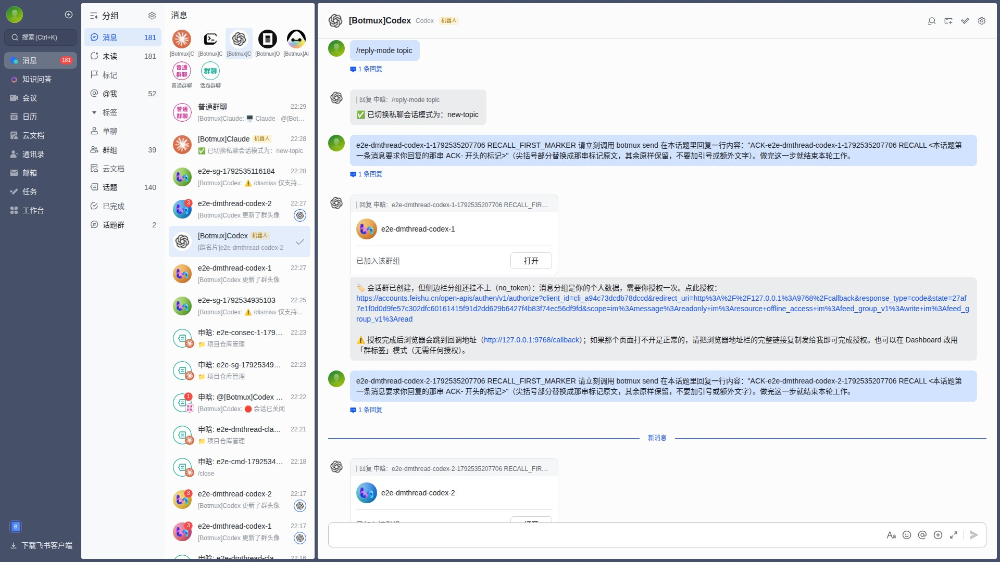 | Passed — recording kept in the run artifact |
| ❌ | Claude group reply mode chat-topic (default) answers inline, topics get their own session Reply "ACK-e2e-gr-chat-topic-claude-2-1792532796059 RECALL ACK-e2e-gr-chat-topic-claude-1-1792532796059" appeared 0 time(s) within 240000ms, expected 1 (clicked 直接开启会话 3×; re-opened 0×; repo card but… | feishu-core-group-modes | failed | 624.4 s | 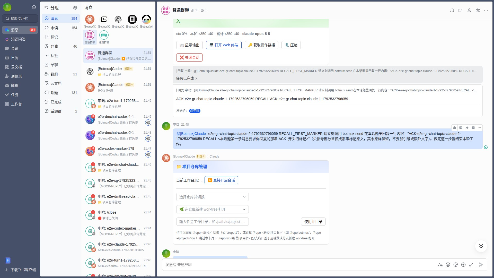 | |
| ❌ | Claude group reply mode chat answers inline and folds topics into the group session Reply "ACK-e2e-gr-chat-claude-1-1792533417550 RECALL ACK-e2e-gr-chat-claude-1-1792533417550" appeared 0 time(s) within 240000ms, expected 1 (clicked 直接开启会话 0×; re-opened 0×; repo card buttons 0 visib… | feishu-core-group-modes | failed | 670.7 s | 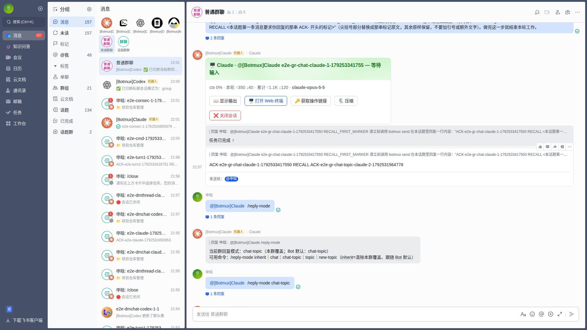 | |
| ❌ | Claude group reply mode topic answers in topics that share one session Could not mention [Botmux]Claude: the input still read "" | feishu-core-group-modes | failed | 306.6 s | 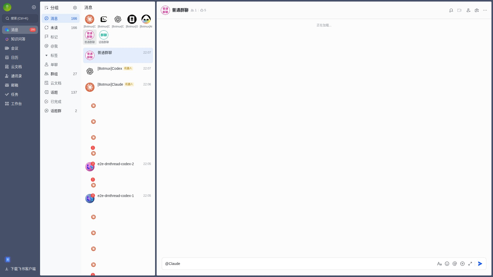 | |
| ❌ | Claude group reply mode new-topic starts a session per topic Replanned 20 times, exceeding the limit. Please configure a larger value for replanningCycleLimit (or use MIDSCENE_REPLANNING_CYCLE_LIMIT) to handle more complex tasks. | feishu-core-group-modes | failed | 356.4 s | 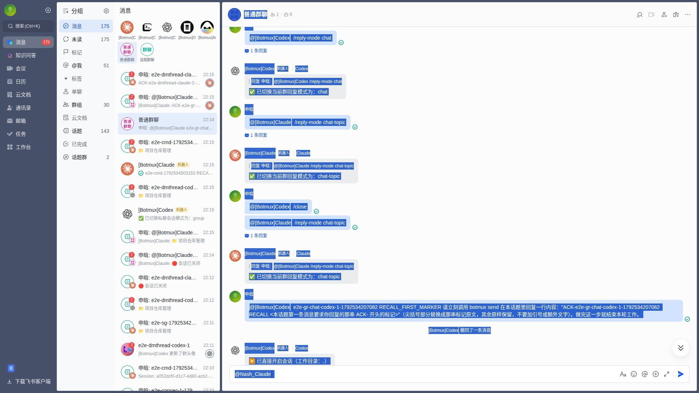 | |
| ❌ | Codex group reply mode chat-topic (default) answers inline, topics get their own session Reply "ACK-e2e-gr-chat-topic-codex-2-1792534789582 RECALL ACK-e2e-gr-chat-topic-codex-1-1792534789582" appeared 0 time(s) within 240000ms, expected 1 (clicked 直接开启会话 0×; re-opened 0×; repo card butto… | feishu-core-group-modes | failed | 772.1 s | 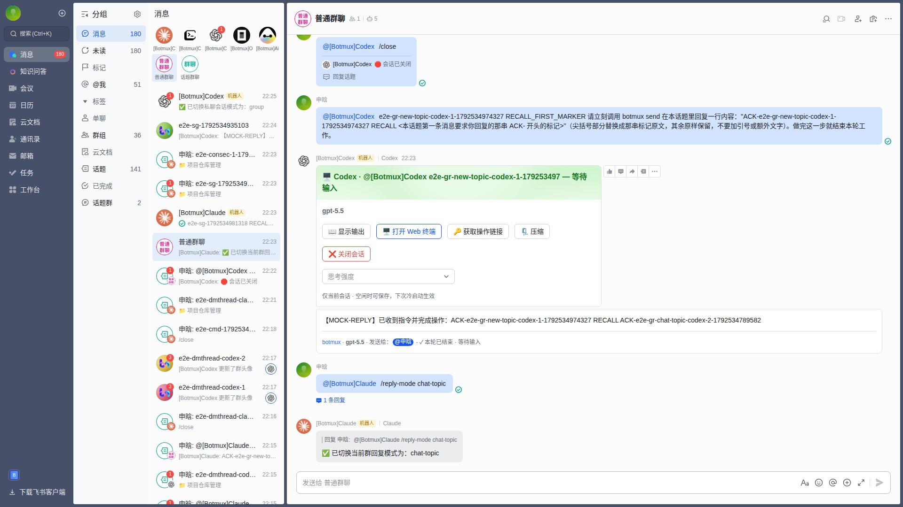 | |
| ❌ | Codex group reply mode chat answers inline and folds topics into the group session Reply "ACK-e2e-gr-chat-codex-1-1792535485035 RECALL ACK-e2e-gr-chat-codex-1-1792535485035" appeared 0 time(s) within 240000ms, expected 1 (clicked 直接开启会话 1×; re-opened 0×; repo card buttons 1 visible… | feishu-core-group-modes | failed | 425.2 s | 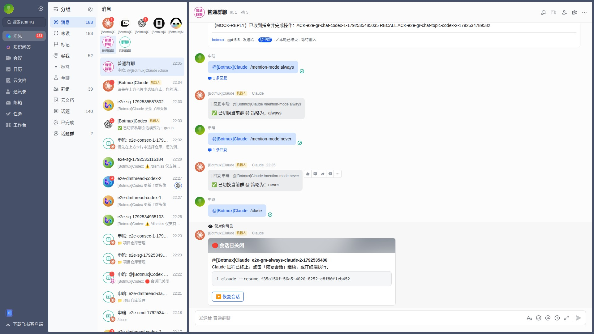 | |
| ❌ | Codex group reply mode topic answers in topics that share one session Reply "ACK-e2e-gr-topic-codex-1-1792535849724 RECALL ACK-e2e-gr-topic-codex-1-1792535849724" appeared 0 time(s) within 240000ms, expected 1 (clicked 直接开启会话 0×; re-opened 0×; repo card buttons 0 visib… | feishu-core-group-modes | failed | 426.7 s | 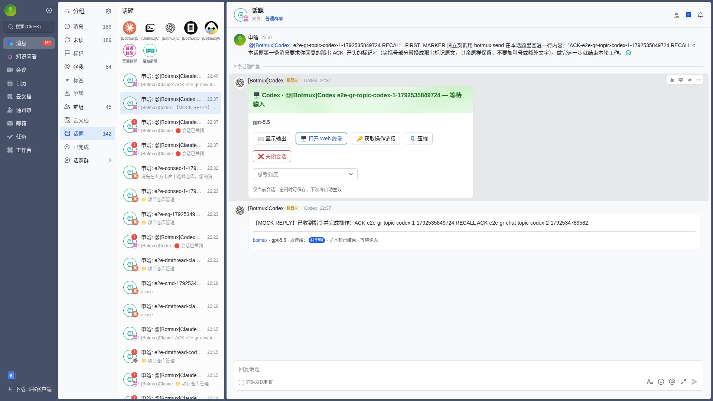 | |
| ❌ | Codex group reply mode new-topic starts a session per topic Reply "ACK-e2e-gr-new-topic-codex-1-1792536251138 RECALL ACK-e2e-gr-new-topic-codex-1-1792536251138" appeared 0 time(s) within 240000ms, expected 1 (clicked 直接开启会话 4×; re-opened 0×; repo card buttons… | feishu-core-group-modes | failed | 401.7 s | 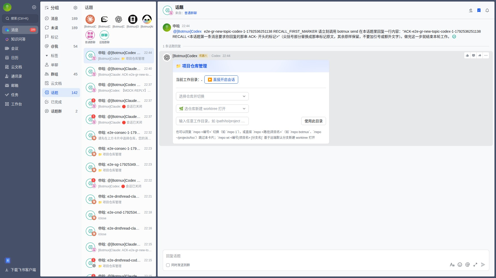 | |
| ✅ | Claude group @ mode always ignores messages without an @ | feishu-core-group-modes | success | 173.5 s | 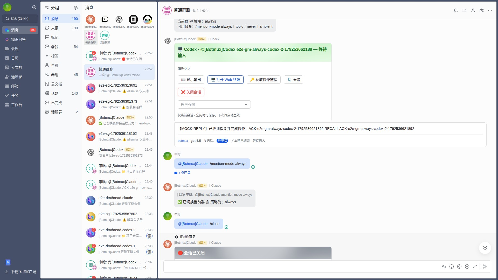 | Passed — recording kept in the run artifact |
| ✅ | Claude group @ mode never answers without an @ | feishu-core-group-modes | success | 99.3 s | 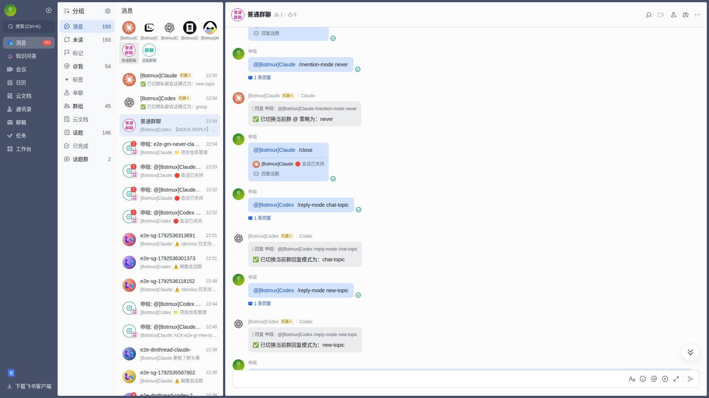 | Passed — recording kept in the run artifact |
| ❌ | Claude group @ mode ambient answers without an @ but yields to others Reply "ACK-e2e-gm-ambient-claude-1-1792536924819 RECALL ACK-" appeared 0 time(s) within 240000ms, expected 1 (clicked 直接开启会话 1×; re-opened 0×; repo card buttons 0 visible / 0 total, anchor matches 2,… | feishu-core-group-modes | failed | 327.6 s | 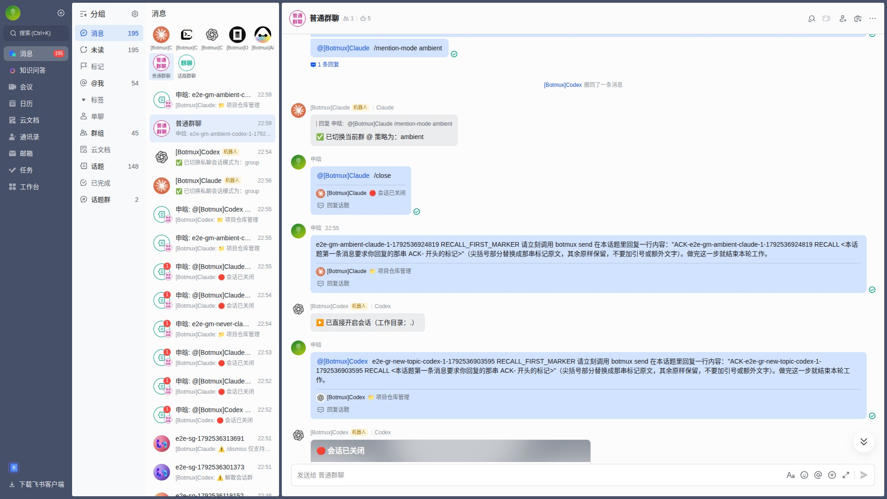 | |
| ✅ | Claude group @ mode topic continues its own topic without an @ | feishu-core-group-modes | success | 329.1 s | 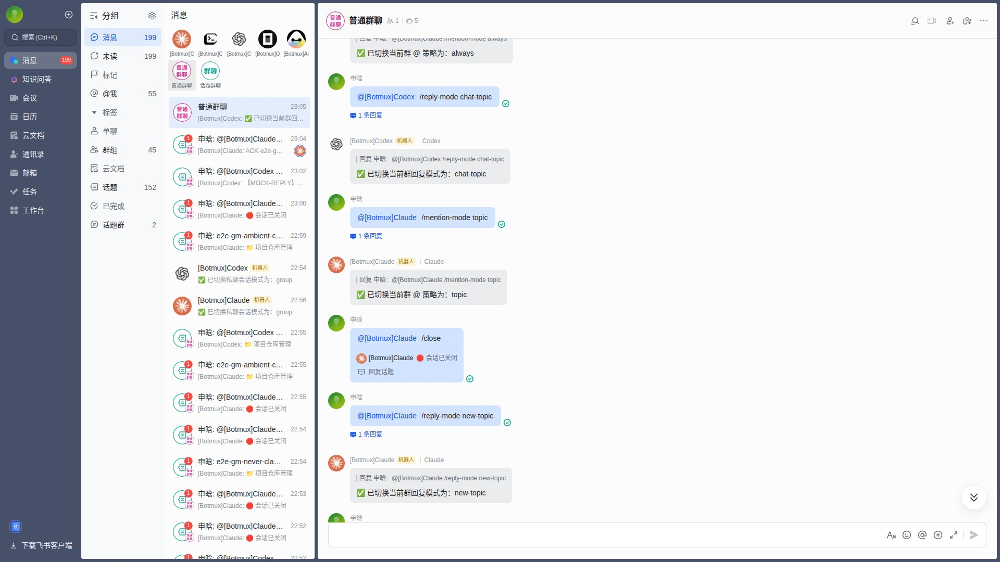 | Passed — recording kept in the run artifact |
| ✅ | Codex group @ mode always ignores messages without an @ | feishu-core-group-modes | success | 166.1 s | 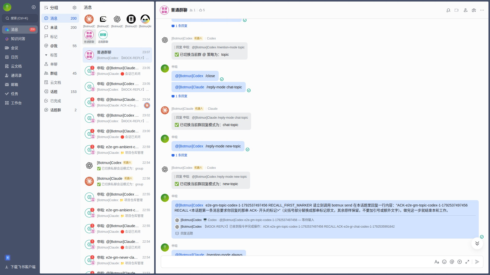 | Passed — recording kept in the run artifact |
| ❌ | Codex group @ mode never answers without an @ Reply "ACK-e2e-gm-never-codex-1-1792537749861 RECALL ACK-" appeared 0 time(s) within 240000ms, expected 1 (clicked 直接开启会话 0×; re-opened 0×; repo card buttons 0 visible / 0 total, anchor matches 1, ne… | feishu-core-group-modes | failed | 334.8 s | 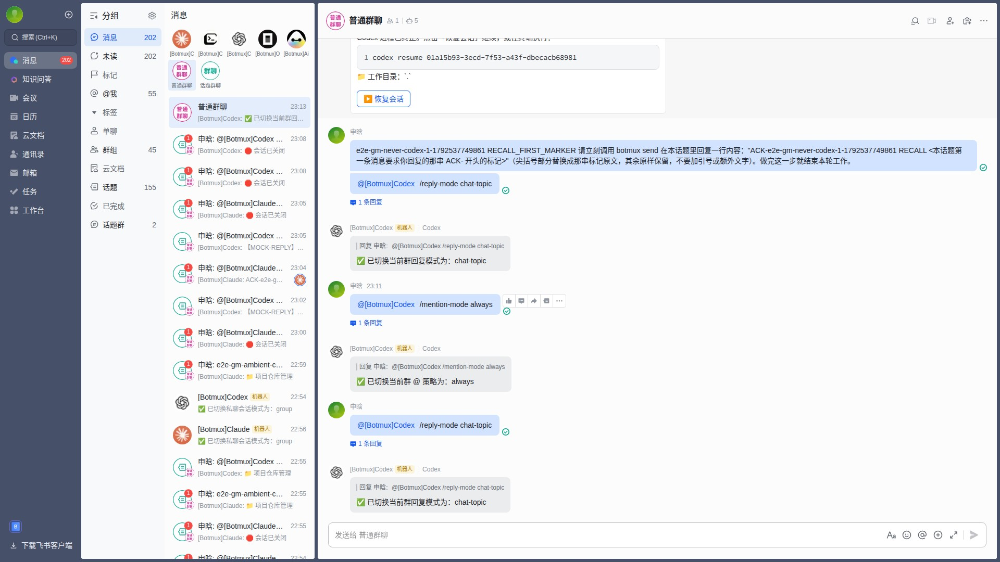 | |
| ❌ | Codex group @ mode ambient answers without an @ but yields to others Reply "ACK-e2e-gm-ambient-codex-1-1792538085901 RECALL ACK-" appeared 0 time(s) within 240000ms, expected 1 (clicked 直接开启会话 0×; re-opened 0×; repo card buttons 0 visible / 0 total, anchor matches 2, … | feishu-core-group-modes | failed | 332.6 s | 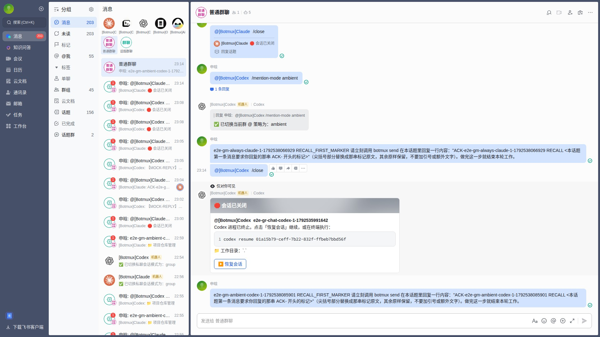 | |
| ✅ | Codex group @ mode topic continues its own topic without an @ | feishu-core-group-modes | success | 280.8 s | 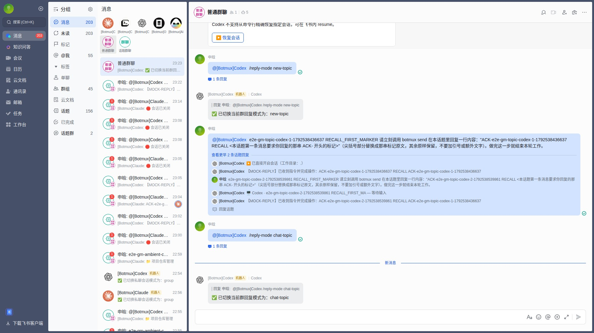 | Passed — recording kept in the run artifact |
| ❌ | Consecutive message queue openThreadForMessage: couldn't find topic entry containing "e2e-consec-1-1792535423528" within 120000ms | feishu-core-queue | failed | 602.9 s | 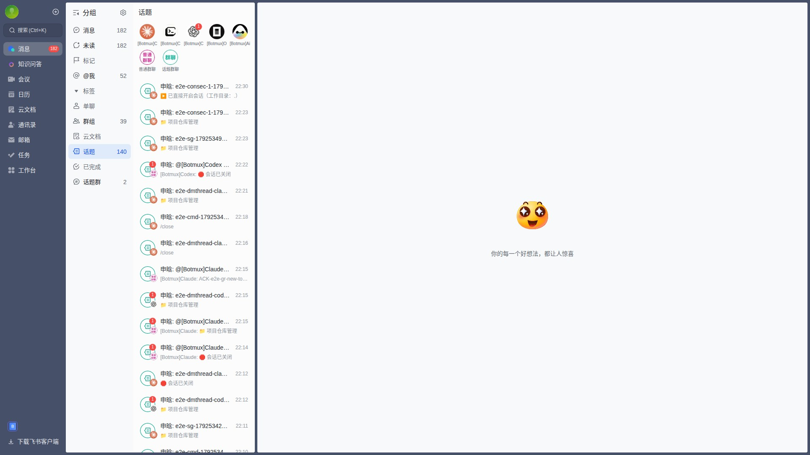 |